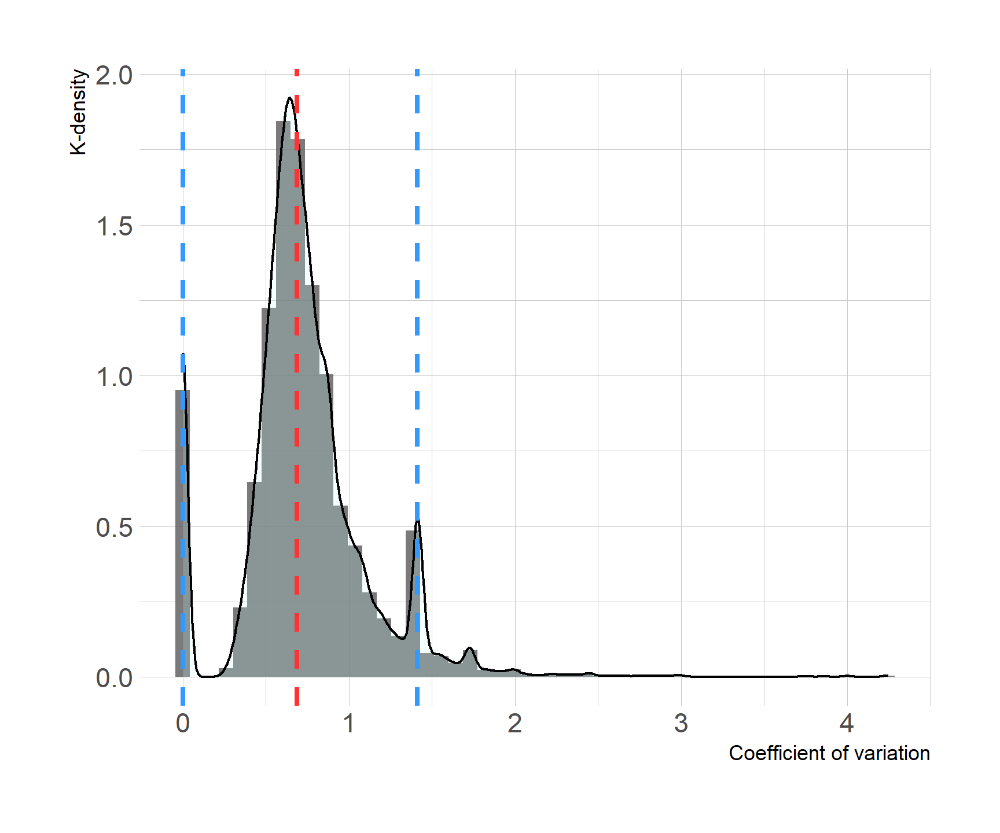

4 Volatility Analysis
The previous two chapters sought to provide insights into the patterns of coverage gaps found in ESG data, and the reasons why those gaps occur from a data production standpoint. This chapter starts to explore the potential for correcting certain gaps using statistical methods. For instance, missing values might (within limits) be interpolated or extrapolated from existing observations, or estimated using linear regression or other modelling techniques. While these techniques are an imperfect substitute for observed data, they may be able to play a limited role within a broader strategy for improving ESG data coverage.
Note that the scope of this paper is limited to analysis of the potential for use of statistical and does not look in detail at specific techniques or tools for doing so. In all likelihood, the most appropriate approach will vary by indicator, and will depend on the definition fo the indicator, the availability of proxies and independent variables (for modelling) and other ideosyncratic factors.
In general though, statistical techniques work best when indicator values move according to observable patterns, and in particular, when temporal variance is relatively low. That is, the less that an indicator varies from period to period for a particular country, the easier it is to reasonably estimate missing values. Consequently, indicator variance can be used as a proxy of the general potential to fill gaps using statistical methods, with low variance suggesting greater potential. In this analysis, we used a standard cofficient of variation (standard deviation divided by mean) to estimate variance for each indicator and country, and scaled all values to a 0-1 range to make values comparable across indicators.
Figure 4.1 shows the coefficients of variation (CV) for each indicator and country displayed as an interactive heat map with indicators on the vertical axis and countries on the horizontal axis. Relatively low CV values appear in light yellow, while high values appear in dark purple.
Note that indicator/country series consisting of a single year are not included in 4.1 since there is no “variation” in a domain of just one observation.
Figure 4.1: Coefficient of variation by country and indicators
Figure 4.3 is a very dense display of data, but its advantage is that it makes it easy to spot outlying instances of country/indicator combinations that are relatively volatile over time, i.e., the dark points with high CV values. These are cases where statistical techniques would be likely be especially unreliable and should be avoided. In the majority of cases, however, ESG indicators appear consistently stable over time.
Table 4.1 shows the percentile thresholds for the CV values in Figure 4.3. Figure 4.2 shows the same data in a histogram; the red line marks the median, while the blue lines mark the 5th and 95th percentiles.
Table 4.1: CV Percentiles
| Percentile | CV |
|---|---|
| Min | 0.000 |
| 5% | 0.000 |
| 10% | 0.375 |
| 25% | 0.551 |
| 50% | 0.688 |
| 75% | 0.873 |
| 90% | 1.204 |
| 95% | 1.414 |
| Max | 4.243 |
Figure 4.2: Density of of ESG indicator CV
One important feature of 4.1 and 4.2 is the presence of a substantial number of zero values, which account for 8.2% of the total number of data points. This occurs when all observations for a country/indicator series are exactly the same value. Examples include highly stable statistics such as land area, renewable freshwater resources, and electricity mix (coal, nuclear, etc). In some countries, health indicators such as AIDS prevalence also exhibit no variation. Other cases may be greater cause for concern. For instance, the fact that the “net migration” statistics for Madagascar, Comoros, and Burkina Faso have not changed over 15 years seems dubious at first glance.
A similar-looking spike in distribution occurs around the 95th percentile. This spike is dominated by a handful of indicators that include observations for only 2-4 years, such as “Population living in areas of elevation below 5 meters,” such that any variation at all results in a significant standard deviation and thus an outsized CV value.
Figure 4.3 shows the distribution of mean CV values for the ESG indicator dataset. Again, the the red line marks the median, while the blue lines mark the 5th and 95th percentiles. The mean CV value may help economists assess whether gap filling is practical for a given indicator. Indicators with low mean CVs may be especially good candidates for gap filling except for the small number of countries with individually high CV values. Indicators with relatively high mean CVs may not be good candidates.
Figure 4.3: Density of mean ESG indicator CV

Table 4.2 shows the indicators whose mean CVs fall below the 5th percentile or above the 95th percentile:
Table 4.2: ESG indicators with lowest and highest volatility
| Low volatility (CV <= 0.45) | High volatility (CV >= 1.2) |
|---|---|
| Renewable internal freshwater resources, total (billion cubic meters) | Cause of death, by communicable diseases and maternal, prenatal and nutrition conditions (% of total) |
| Electricity production from nuclear sources (% of total) | Terrestrial and marine protected areas (% of total territorial area) |
| Land area (sq. km) | Population living in areas where elevation is below 5 meters (% of total population) |
| Strength of legal rights index (0=weak to 12=strong) | Value lost due to electrical outages (% of sales) |
| Access to electricity (% of population) | Annualized average growth rate in per capita real survey mean consumption or income, total population (%) |
| Electricity production from coal sources (% of total) | Incidence of malaria (per 1,000 population at risk) |
4.1 Implications for Gap Filling
While gaps in ESG data follow several patterns as described in the Coverage Analysis chapter, the most significant issue is likely indicators whose most recent value (MRV) is 2 years out of date or more, as investment decisions are made in the context of current and near future conditions. The CV analysis in this chapter and summarized in Figures 4.2 and 4.3 suggest that (normalized) indicator values fall within a fairly narrow range with few outliers, and that the majority of values are below 1.0. In several probability fields values below 1.0 are considered low-variance. While it’s not clear whether this benchmark applies in the context of some or all ESG indicators, it provides a starting point for thinking–conservatively–about the potential for using statistical methods for filling gaps in ESG data. Again, it is beyond the scope of this analysis to suggest specific gap filling techniques, but stipulating that gap filling will be more robust where indicator variance is low, we can start to think about the impacts of doing so.
For instance, in this analysis there are 217 countries and 115 indicators for a total of 24955 country/indicator pairs. 7659 country/indicator series have an MRV value of 2018 or later. So we can say that the year 2018 has coverage of 7,659 / 24,955, or 31%. To estimate the potential for gap filling techniques, let’s say that we can confidently extrapolate or estimate an additional year of data from observed values beyond the current MRV for any country/indicator series with a CV value below the 25th percentile of 0.551. Again, while we don’t know exactly how the estimate would be obtained, we can assume the effect would be to increase the MRV year by 1, raising 2016 to 2017, 2017 to 2018, etc. The resulting new estimates mean that we now have 8,559 country/indicator series with at least a 2018 MRV value, which raises our coverage to 8,559 / 24,955 or 34%. One could vary the study year, CV threshold and number of years to extrapolate in various combinations, as shown by Table 4.3.
Table 4.3: Effects of selected CV thresholds and lengths of imputation on coverage in 2018
| CV Threshold | Years To Extrapolate | Resulting Coverage (%) |
|---|---|---|
| 0.551 | 1 | 35 |
| 0.688 | 1 | 39 |
| 0.873 | 1 | 43 |
| 0.873 | 2 | 50 |
Alternatively, the tool below provides an interactive way to test various combinations of assumptions and see both the aggregate impacts and the effects on individual indicators. Area under the curve (AUC) is equivalent to the percent coverage for any set of assumptions (100% being “perfect” coverage of a value for every indicator and country).
Page built: 2020-07-09